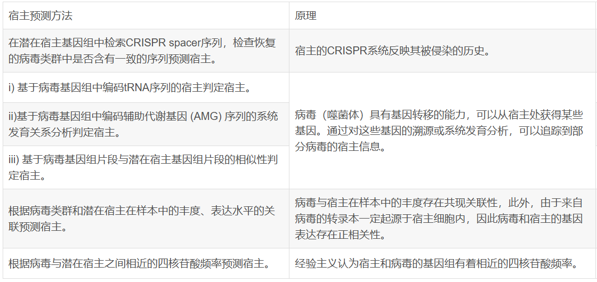

Metagenomics
论文速览: Nature Portfolio
2024
- 甘蔗内部或周围的MAGs：亮点可能在于植物微生物群宏基因组研究较少？以及植物样本处理方法、使用Nanopore数据组装接近完整基因组的bin
- 暴露学研究：肠道共生体对环境污染的反应：α多样性(物种丰富度)在各组之间没有差异，β多样性(微生物成分)有显著差异
- 流行病学：肯尼亚东北部多种细菌性人畜共患的诊断
- 流行病学：按蚊基因组中的外源序列（有点像pathseq?）：通过 Microsoft Premonition’s Bayesian mixture model based (BMM) 宏基因组pipeline 分析 Anopheles gambiae 1000 Genomes Project 按蚊基因组。在基因组中发现噬菌体/细菌/疟原虫 reads、人类/灵长类病毒序列，提示存在按蚊媒介-家畜宿主-病原体相互作用 数据处理方式值得参考
- 微生物与癌症：拟杆菌门激活LPS介导的炎症通路，促进食管癌细胞的增殖、迁移和侵袭（通过对比两组样本，找到丰度与LPS水平显著相关的细菌）
- 深海海山沉积物中病毒的多样性和潜在的宿主相互作用：vConTACT2病毒分类注释，且对vOTU预测宿主
 - Pangaea MAG组装工具：改善短读段组装高/中等丰度微生物基因组组装的连续性。1. 基于 barcode 特异性对 reads 分簇，分别组装得到高/中等丰度微生物；2. 多阈值重组，不同的丰度阈值来细化低丰度微生物的组装；3. OLC算法进行整合
- Microbial dark matter could add uncertainties to metagenomic trait estimations：??
- 皮肤微生物组-特应性皮炎(AD)早筛？：发现一些 Marker Taxa
Microbial Forensics
- What is Microbial Forensics
- Forensic Applications of Microbiomics: A Review (2020)
- 中文综述 (2022)
- Application of Microbiome in Forensics (2023)
微生物法医学致力于分析来自生物恐怖主义行为、生物犯罪或无意中释放的微生物/毒素的证据，以归因为目的：识别生物威胁剂的来源，并将生物威胁行为归因于特定的人或群体。
我觉得：个人识别不太可能，但至少反应了某种生活习惯，为侧写提供帮助（是否养宠物、爱干净、生理因素 等）--- 但只能获得受害者的样本，普通的调查应该也能获得这些信息？？如果是针对嫌疑人，这些作为起诉证据又不完全靠谱；或者说应该多点采样查看是否有突兀的分布点，以此从环境中分离潜在的外源宏基因组，然后推断有具有某种特征的客人来过？（不太可能实现吧。。。除非有十分特异的marker）
-
地理定位
- 土壤类型和地理位置都是决定微生物群落组成的重要因素，已支持正确地将95.4%土壤细菌图谱分类到它们的地理位置
- 16S 测序也可用于溯源鞋底获得的土壤、区分混合物中样品不同的土壤
- 问题：微生物组在空间和时间上都表现出高度的物理、化学和生物多样性，例如受季节影响严重
- 联想：可以通过微生物组成推断一下水分、温度之类的？
-
个人识别
- 口腔、衣物等提取的宏基因组/16S 可以区分个体，但是研究样本太小(<50)，存疑
- 问题：扰动太大，在大样本中不太可能实现
-
生物性别确定
- 男性的房间显示出更高的微生物群相对丰度，能是因为男性可能会脱落更多的生物颗粒，或者使用较少的化妆品屏障
- 问题：需要进一步进行更大样本量的验证研究
-
死亡方式和原因
- 溺水：检测与水生环境相关的细菌种类，还可以定位海洋或者河流？
- 药物、疾病相关死亡：药物、代谢影响微生物组成？例如CRP升高代表炎症
- 联想：应该会有动物实验进行个体经历的追踪测序？例如是不是第一现场会造成什么影响
-
死亡时间PMI估算
- 也许可以增强现有预测模型
- 问题：仅有动物实验数据